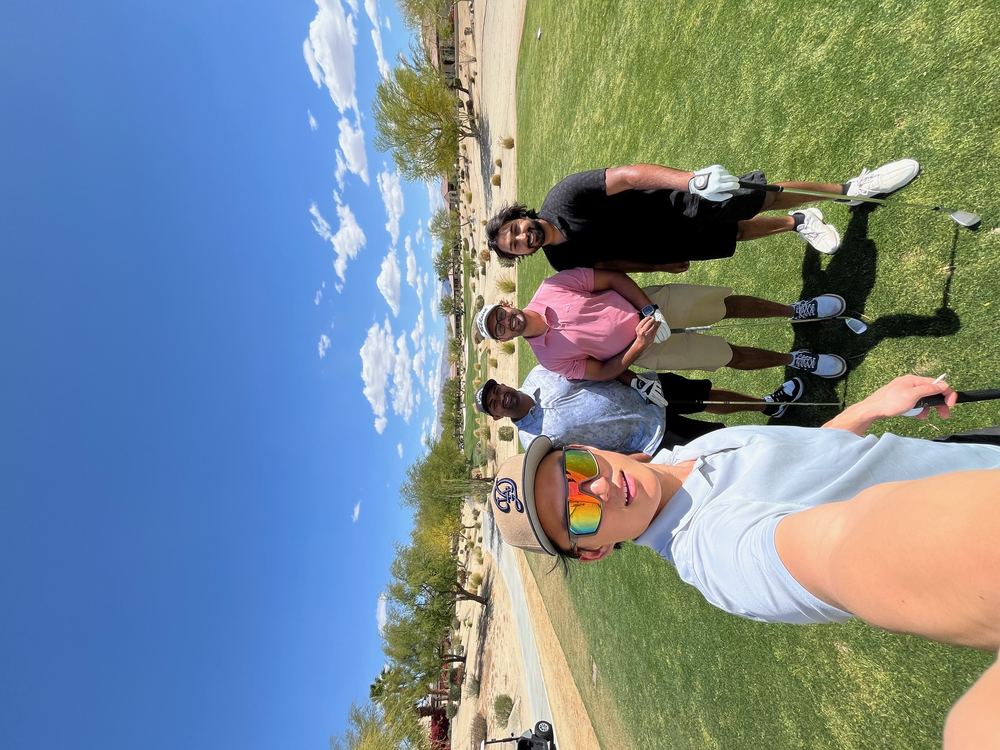

This is my portfolio website where you will get to learn all about me and some of the stuff that I work on! I am 25 years old and work as a Systems Engineer. I am currently obtaining my masters in Data Science and working on obtaining some certifications.
